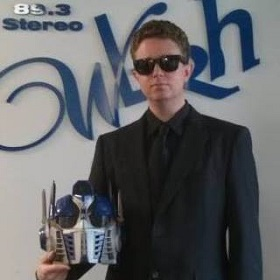

About Me
After a couple of decades in broadcasting, I've decided to carry on as a professional communicator, but with very different media. For years, I was a prominent radio voice of afternoon-evening "drive-time" in Huntsville, Alabama. Now in Atlanta, I spend my time creating digital media presentations to inform, entertain, and effectively market the offerings of my clients.
I welcome you to explore my development work, and to contact me with any questions. Your interest is greatly appreciated.
Connect with Me